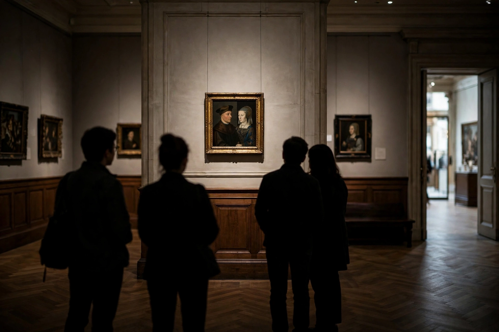

Wikipedia — The Free Encyclopedia

The Arnolfini Portrait (or Arnolfini Wedding, Arnolfini Marriage, or Portrait of Giovanni di Nicolao Arnolfini and his Wife) is a 1434 oil painting on oak panel by the Early Netherlandish painter Jan van Eyck. It forms a full-length double portrait of the Italian merchant Giovanni di Nicolao Arnolfini and his wife, presumed to be in their residence at Bruges. It is one of the most famous and most analysed paintings in Western art, and hangs in the National Gallery, London.
The couple stand in a well-appointed bedchamber. Giovanni raises his right hand as if taking an oath while his left hand holds his wife's hand; she rests her own hand on the swelling drapery of her green gown, a fashionable silhouette rather than a sign of pregnancy. Around them is a wealth of precisely rendered detail: a little Brussels griffon dog, discarded pattens, oranges on the windowsill, a bed with red hangings, and a single candle burning in the chandelier in daylight. On the rear wall hangs a convex mirror in which the whole scene is reflected in miniature, including two men entering the room; above it, in ornate Latin script, is the inscription "Johannes de Eyck fuit hic 1434" — "Jan van Eyck was here 1434".
Art historians have long debated the painting's purpose. Erwin Panofsky's celebrated reading treated it as a kind of pictorial marriage certificate, with van Eyck as witness and nearly every object laden with "disguised symbolism". Later scholarship has questioned whether the scene records a wedding at all; the woman may be Giovanna Cenami, whom Giovanni married in 1447, after the panel's date — suggesting it could be a posthumous memorial portrait. The debate continues, and the painting's mirror has become an emblem of van Eyck's microscopic realism.